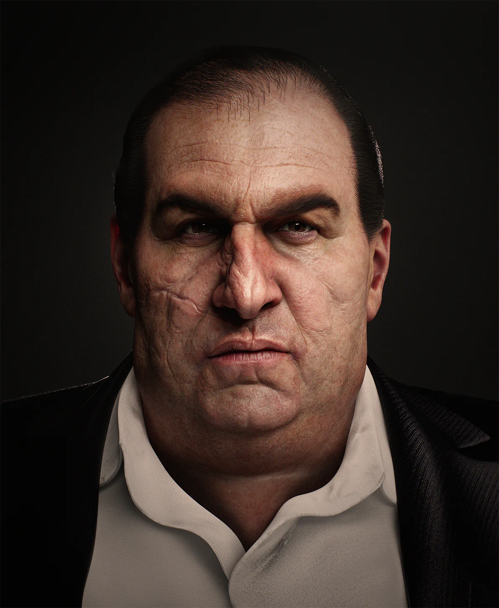 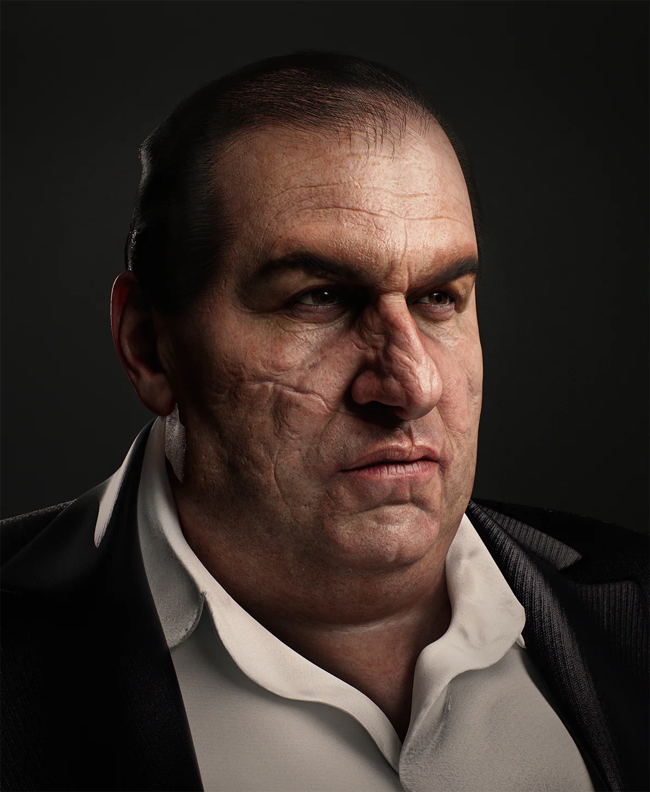 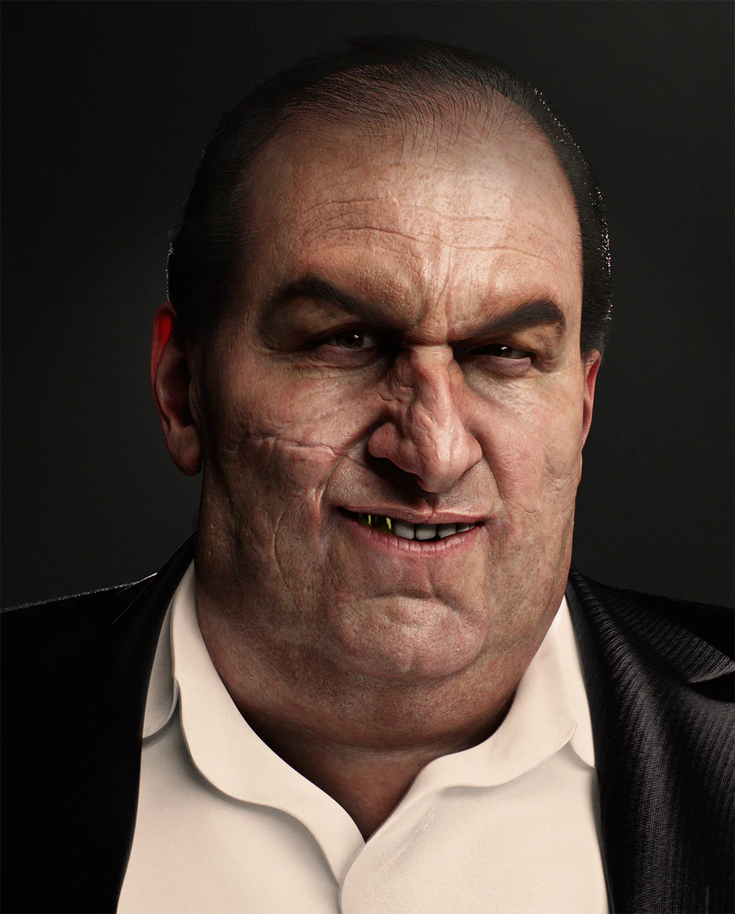
Para el proceso, se utilizó Zbrush para modelado y Marmoset para iluminación y renderizado, buscando una estética cinematográfica, prestando especial atención a las texturas y la expresividad del personaje.
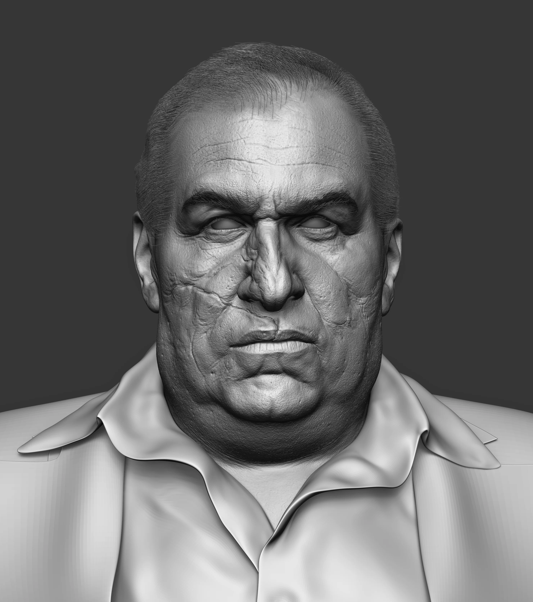 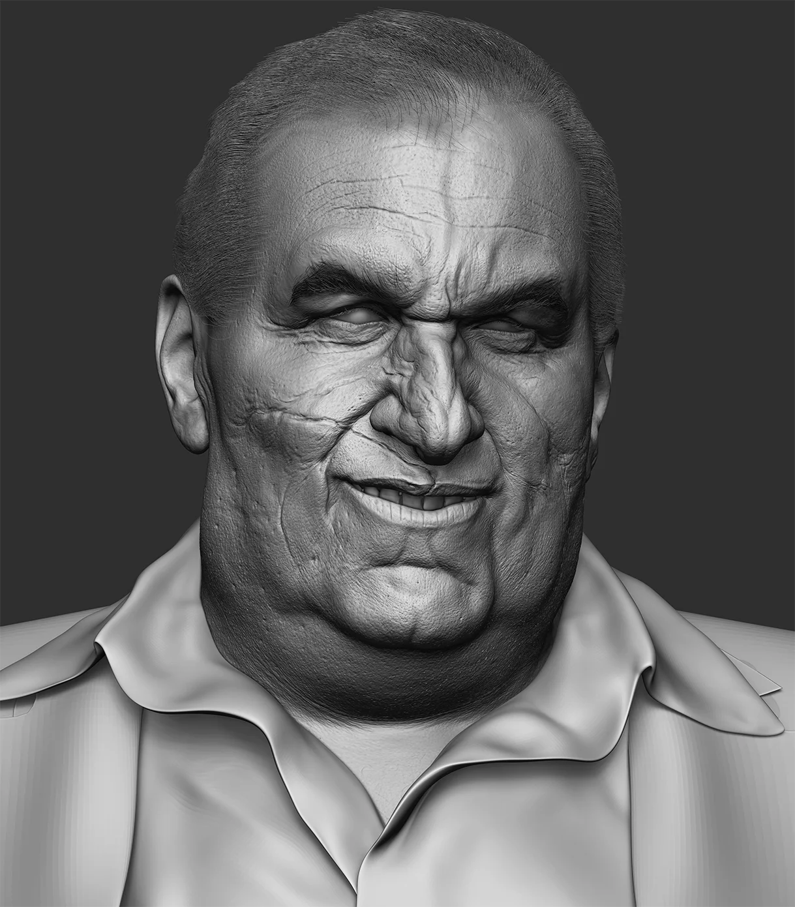 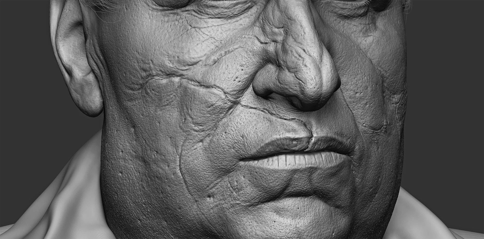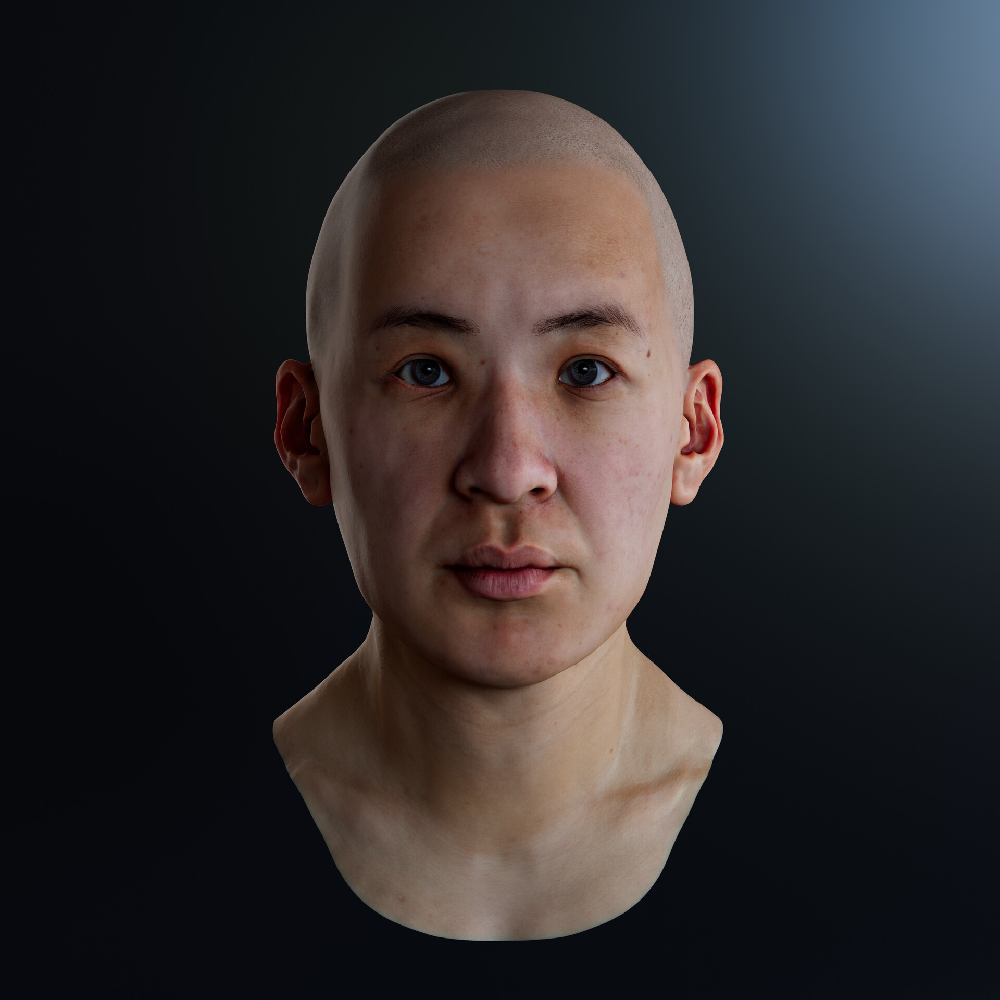
Este estudio anatómico en 3D se centra en la figura femenina asiática, destacando sus proporciones, estructura ósea y musculatura. El proyecto incluye capturas de pantalla y renderizados del proceso y la fase final.
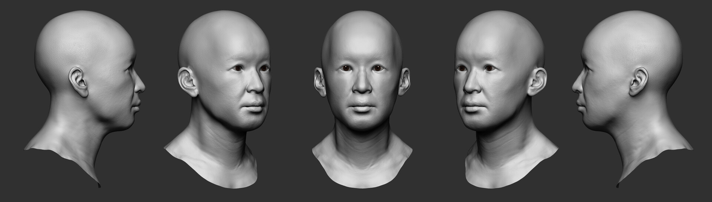 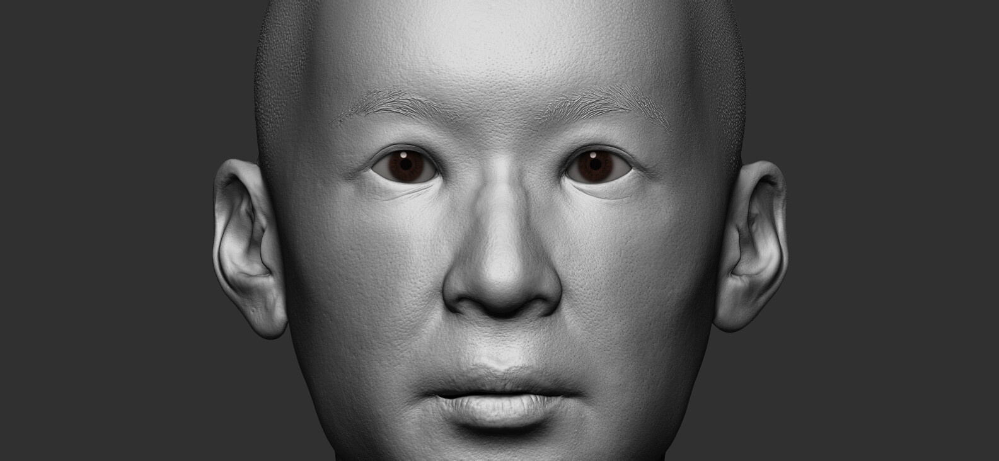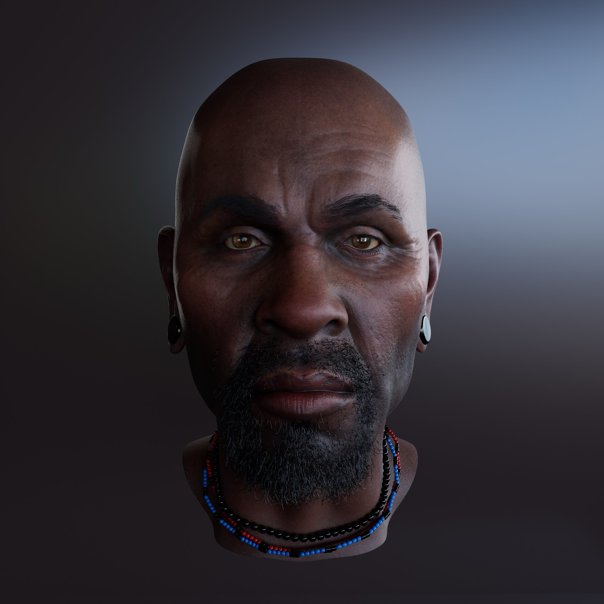
Este estudio anatómico de un busto de un hombre africano en 3D, realizado con Zbrush, se centra en modelar con precisión las proporciones faciales, la estructura ósea y la musculatura características de esta etnia. El proceso incluye esculpido detallado y la aplicación de texturas para lograr un acabado realista, desde la fase inicial hasta los detalles finales.
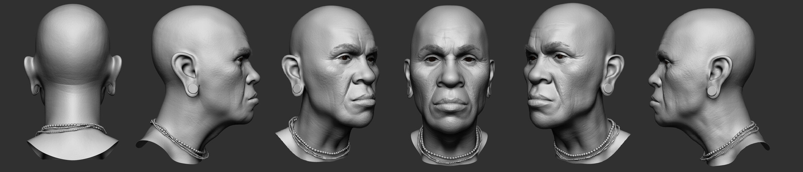 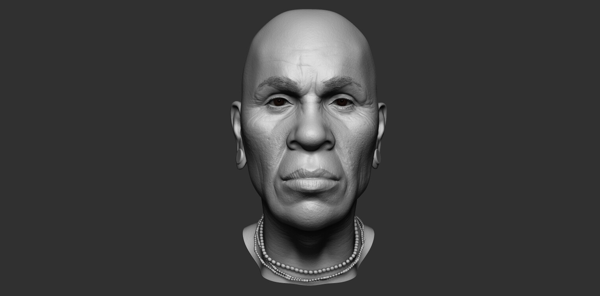